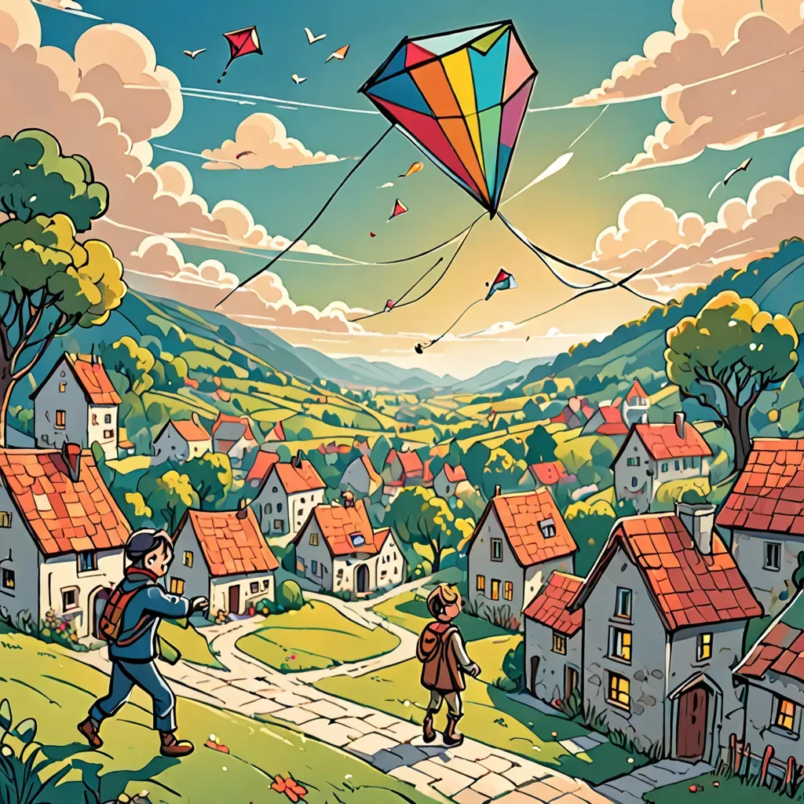

The Enchanted Kite
Once upon a time in the heart of the Whispering Woods, there was a small village named Breezy Hollow.
The villagers were known for their joyful laughter and their colorful kites that danced in the sky like cheerful birds. Among them was a little girl named Lila, who loved flying kites more than anything else.
One day, as Lila was wandering through the forest in search of the perfect tree to hang her new kite, she stumbled upon a hidden glade she had never seen before. In the center of the glade stood an ancient oak tree with leaves that shimmered like gold. At the base of the tree lay a sparkling kite, unlike any she had ever seen. Its fabric was a rainbow of colors, and it seemed to glow with a magical light.
With excitement twinkling in her eyes, Lila picked up the kite. As soon as she touched it, the kite began to hum softly, and a warm, gentle breeze lifted it into the air. To Lila's amazement, the kite spoke in a voice as soft as a whisper.
“Hello, Lila. I am the Enchanted Kite. I have been waiting for you.”

The kite explained that it was a gift from the Fairy Queen, designed to bring joy and magic to those who flew it with a pure heart.
It had the power to grant one wish to the person who let it soar in the sky.
Lila thought carefully. She didn't want to waste such a precious gift,
so she wished for something that would help everyone in her village.
“I wish for all the children in Breezy Hollow to always find happiness and wonder,” she said.
As soon as Lila made her wish, the kite soared higher and higher, and a rainbow appeared in the sky, spreading joy throughout the village.
From that day on, every time the children flew kites, their laughter echoed through the Whispering Woods, and their days were filled with endless magic and delight.
And so, the Enchanted Kite continued to fly, bringing joy and wonder wherever it went. And Lila, with her pure heart and thoughtful wish,
became the beloved guardian of the magical kite.
And they all lived happily ever after.